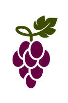
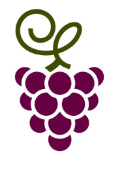

Szüretelés
Hátralévő lépésszám:
Pontoszám:
0
Legjobb pontszám:
0
Képességek:
Hátralévő lépésszám:
Pontoszám:
0
Legjobb pontszám:
0
Képességek:
A játék lényege hogy olyan irányba haladjunk, hogy minél több szőlőt tudjunk le szüretelni.
Teleportálás: Ilyenkor bármely mezőre tudunk lépni és a játékot arról a mezőről folytatjuk.
Látótávolság növelés: Ilyenkor nem csak egy hanem kettő mező távolságra is tudunk lépni.
Kereszt: Ekkor a játékos az adott oszlopban és sorban bárhová képes lépni, és onnan folytatja ahová lépett.
| Képek: |  |
 |  |  |
||
| Értékük: | 16 | 8 | 9 | 13 | 10 | 10 |